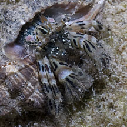
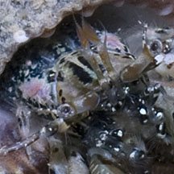
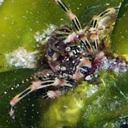
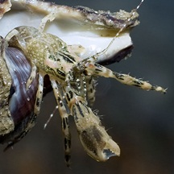
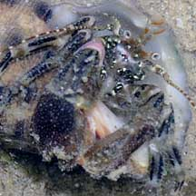

|
|
| hermit crabs text index | photo index |
| Phylum Arthropoda > Subphylum Crustacea > Class Malacostraca > Order Decapoda > Anomurans > hermit crabs |
| Pink
banded hermit crab Pagurus hedleyi* Family Diogenidae updated Dec 2019 Where seen? This little hermit crab with black bars is commonly seen on some of our shores near reefs, rocky shores and even artificial seawalls. Features: Body about 1-1.5cm long, body with bold black bars and two large bright pink spots or bars on the sides near the eyes. Right pincer usually larger than the left, darker at the claws. Legs sparsely hairy, with longer black bars in bands, joints may be bright pink. Short antennae pale with orange feathery tip. Eyestalks pale. Long antenna banded maroon or dark brown with white dots. |
 Tanah Merah, Sep 13 |
 Eye stalks and short antennae pale. |
 Right pincer larger, darker at the base. |
|
 Changi, May 08 |
 Punggol, Jan 13 |
 Tanah Merah, Dec 09 |
*Species are difficult to positively identify without close examination.
On this website, they are grouped by external features for convenience of display.
| Pink banded hermit crabs on Singapore shores |
On wildsingapore
flickr
|
| Other sightings on Singapore shores |
| Acknowledgements With grateful thanks to Dr Dwi Listyo Rahayu for the identification and Rene Ong for sharing the ID. |